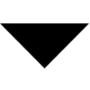

Active Tables

x1.0
Annotations
Show Hidden
New Annotation
Editor(s):
Set Pin
Annotation:
Cancel
Write Annotation
% (
/
)
Control Panel
Table Commands
C
lear
(Quick-)
S
ave
S
ave As...
L
oad
Export
Settings
Quit
Undo/Redo
Undo
Redo
Tools
Reconstruction Area
cm (W)
cm (H)
Remove Area
M
easurement
Remove All
Display
L
ight
G
rid
S
cale
R
ulers
Flip Table (vert)
Flip Table (hor)
Graphical Filters
Reset
Brightness
Contrast
Saturation
Sharpness
Colour Inversion
R
G
B
Black/White
Fragments
Upload Fragment
TPOP Fragments
No fragments selected
...
Edit Fragment
Remove Fragment
Lock Fragment
Flip Fragment
Drop files here to upload